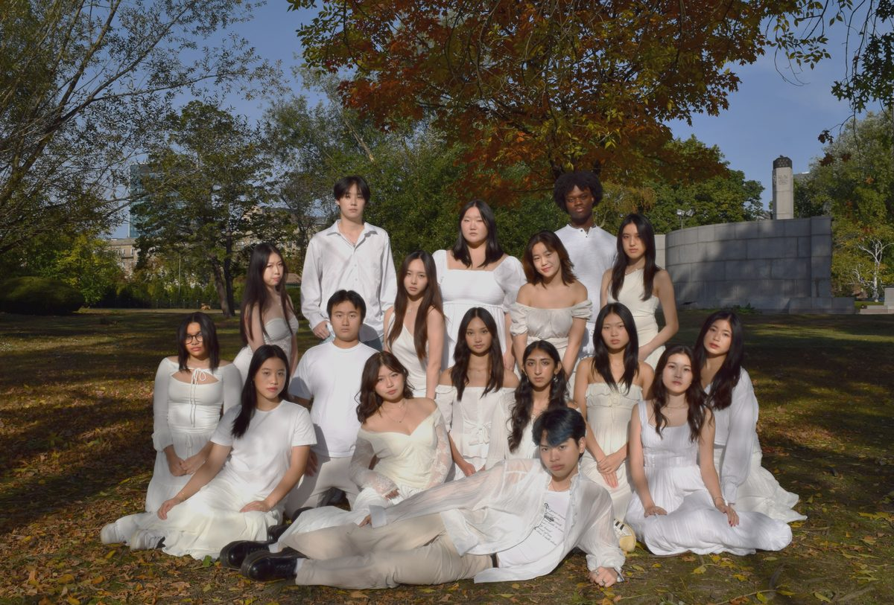
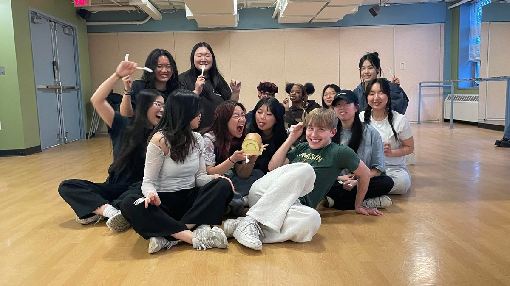
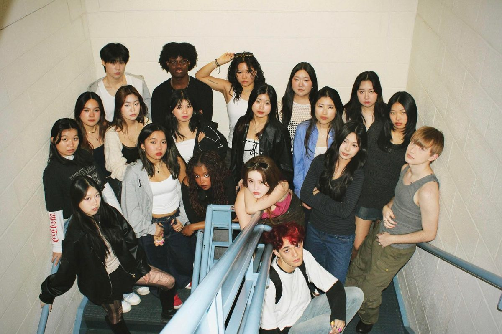
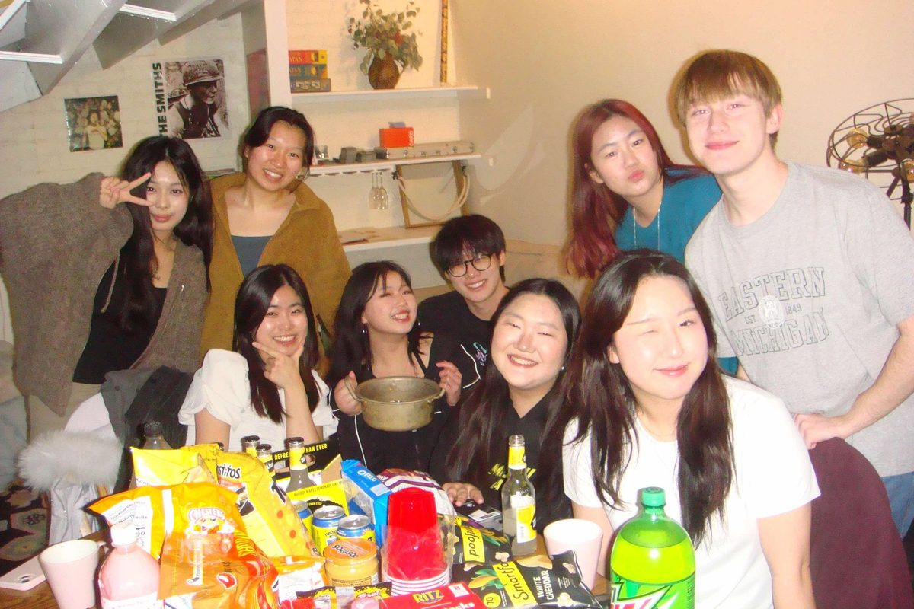
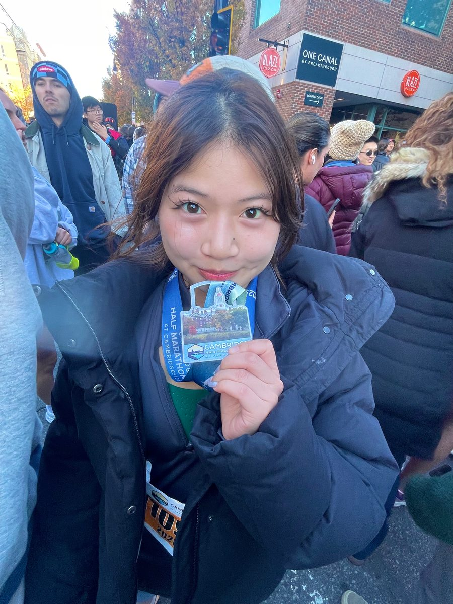
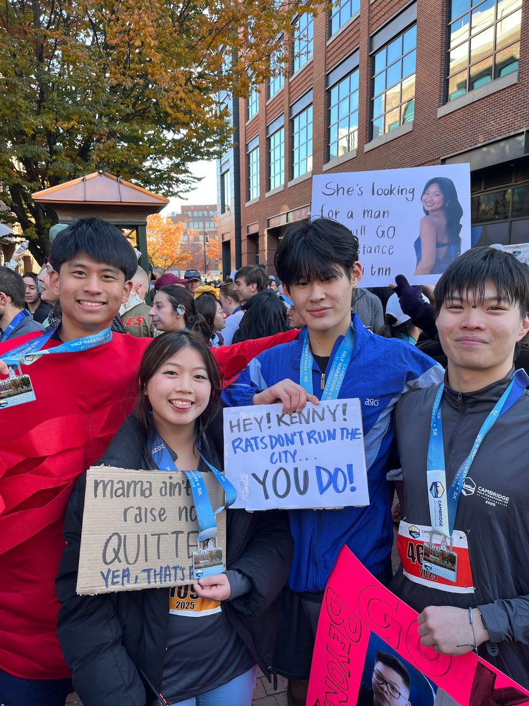
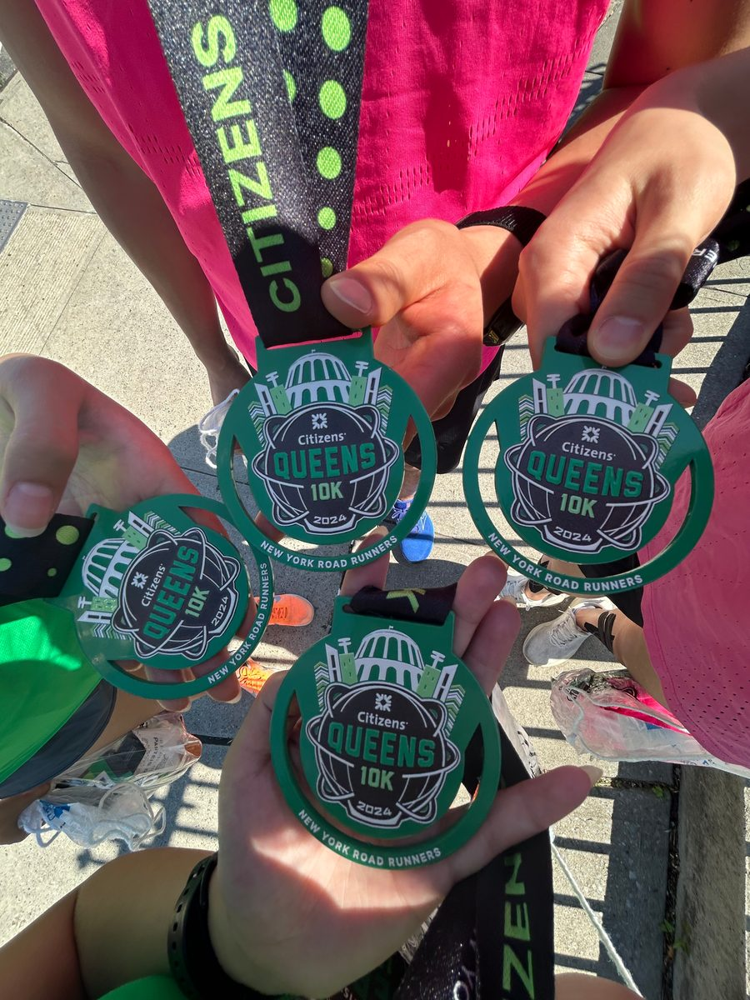

About / Me
hi, i'm katie
I’m a New York-based brand designer and artist driven by curiosity and experimentation. I fell in love with design because it acts as a playground for me to try out different ways a brand can tell its story.
I’m currently studying Business Administration & Design at Northeastern University and seeking Summer 2027 internships!

Off the clock
Life outside of design
Dance team
Goldies dance team @ Northeastern University




Running
10Ks and half marathons!


